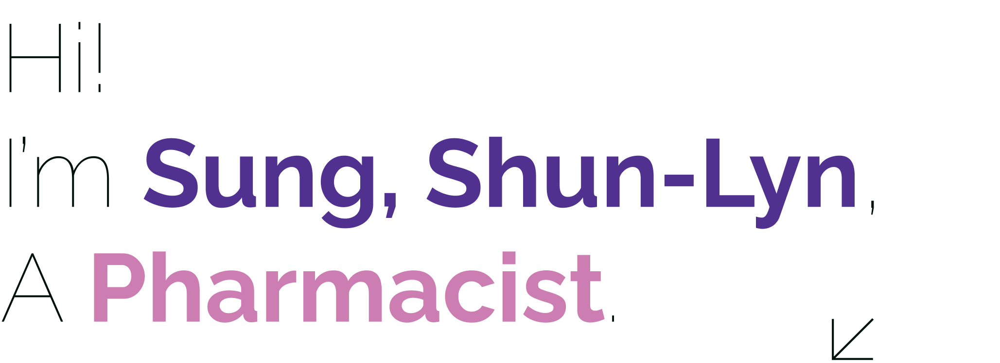

-

-

-
1982
1982-1986
1986-1990
1990-1997
1994
1997-2002
2002-2004
2002-2005
2002-now
2008-2012
2008-2010
2008-2012
2011-2013
2011-2017
2013-2019
2015
2015
2015
2015-2019
2016
2016-2019
2017
2017
2017-2020
2018
2018
2018
2019
2019
2019
2019
2019
2019-2021
2016-2021
2016-2022
-
Graduated from the Department of
Pharmacy, National Taiwan University
Chief Pharmacist, Pharmacy Department,
Asia University Memorial Hospital
Part-time Translator/Legislation,
focused on Maternity Leave
International Trade Law Firm,
specializing in Pharmaceutical/Food/
Cosmetic Regulations
Volunteer Legal Counselor and Radio
Host, Women's New Knowledge Foundation
Self-Employed at SOHO Studio,
specializing in Pharmaceutical/Food/
Cosmetic Regulations
5th Chairperson, Taipei Women's New
Knowledge Association
Deputy Chairperson, International
Affairs, Pharmacists Association of
ROC
Web Committee Member, Western Pacific
Pharmaceutical Forum (WPPF)
28th and 29th Chairperson, National
Taiwan University School of Pharmacy
Alumni Association
Supervisor, Taipei Pharmacists
Association
International Affairs Committee
Member, Taiwan Society of Clinical
Pharmacy
Secretary General, 60th Anniversary
Preparation Committee, National Taiwan
University School of Pharmacy
Executive Director, Chinese Women's
Health Foundation (until Dec. 2017)
Supervisor, National Union of Taiwan
Women's Associations (until Apr. 2019)
ICWES17 @New Delhi, India (10/5-10/7)
INWES APNN @Ulaanbaatar, Mongolia
(6/25-6/27)
75th FIP @Düsseldorf, Germany
Chairperson, Taiwan Women in Science
and Technology Association (until Nov.
2019)
INWES APNN @Wellington, New Zealand
(8/8-8/19)
Executive Supervisor, Taiwan Women in
Science and Technology Association
(until Nov. 2019)
INWES APNN & GWST @Yokohama, Japan
(7/14-7/15)
77th FIP @Seoul, South Korea
(9/10-9/14)
Executive Director, Chinese Women's
Health Foundation (until Dec. 2020)
APNN @Hanoi, Vietnam (10/18-10/20)
INWES APNN Preparatory Meeting @Hanoi,
Vietnam (4/7)
MAPWiST & KWSE/APNN International
Young Woman Scientist Camp @Seoul,
South Korea (8/25-27)
Ethics of S&T and Sustainable
Development @Bangkok, Thailand
(7/5-7/6)
Gender Summit AP16 @Singapore
(8/29-8/30)
MAPWiST & KWSE/APNN International
Young Woman Scientist Camp @Seoul,
South Korea (8/7)
INWES APNN @Kathmandu, Nepal
(9/20-9/21)
79th FIP Taiwan Reception Committee
Member @Abu Dhabi (9/22-9/26)
Executive Supervisor, Taiwan Women in
Science and Technology Association
(until Nov. 2021)
Executive Supervisor, National Union
of Taiwan Women's Associations
(until Apr. 2021)
Board Member, Taiwan Pharmaceutical
Regulatory Affairs Association
(until Oct. 2022)
-